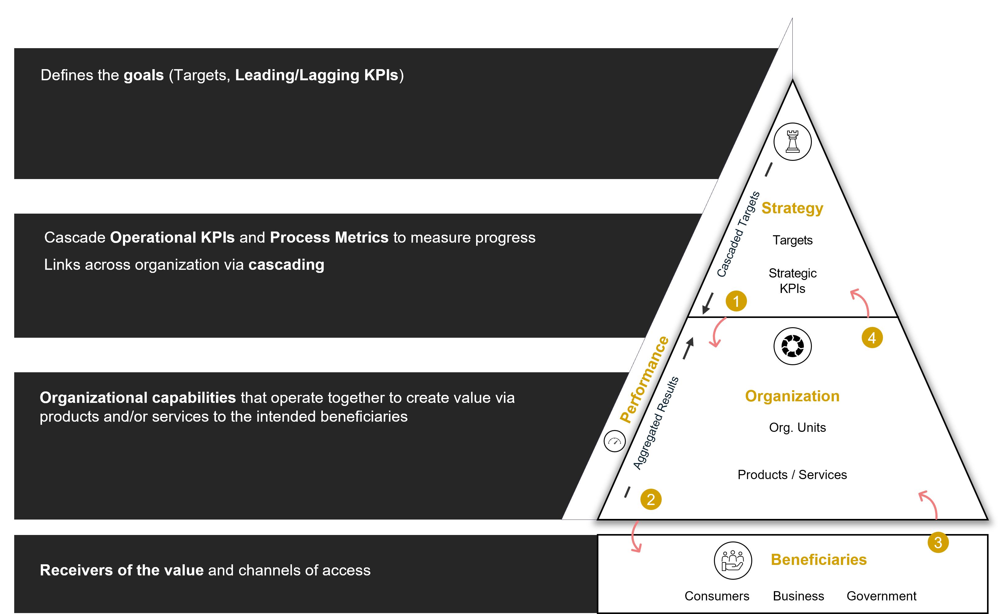
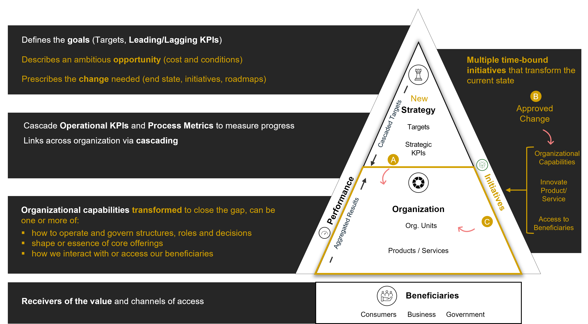

Episode 1.1: What is an Organizational Transformation?
The Anatomy of an Organization
At a structural level, the components of interest are categorized as follows:
At a structural level, the components of interest are categorized as follows:
- Strategy: Articulates long-term objectives and organizational priorities, typically revisited annually to ensure alignment with evolving mandates.
- Operations: Encompasses the people, processes, technologies, and physical assets mobilized to implement strategic intent and deliver tangible outcomes.
- Target Setting and Value Delivery: Strategic targets cascade to operational units, where value is generated for designated stakeholders through specific delivery channels.
- Performance Monitoring: Execution outcomes are tracked via performance metrics, enabling feedback loops that inform future strategic refinements.

Figure 2: Organization in Normal Mode
What Constitutes a 'Transformation'?
A transformation signifies a deliberate, often disruptive, departure from the established organizational form.
In a digital transformation, technology becomes a core element of service delivery and internal operations, rather than a supportive adjunct.
Incremental changes may improve efficiency but do not meet the threshold for transformation.

Figure 3: Organization in Transformation Mode
The conditions surrounding a Transformation
An organizational transformation becomes necessary when existing systems, processes, and capabilities are insufficient to deliver on a new set of strategic ambitions.
A. Strategic Ambition Exceeds Operational Capability
A new opportunity or mandate requires capabilities that the current organizational model cannot provide.
B. Change is Sanctioned and Funded
The transformation is formalized through an endorsed change agenda and the allocation of fiscal and human capital.
C. Institutional Value Creation is Reengineered
These initiatives reconfigure the organization's mechanisms for value creation.
In public-sector contexts, transformational triggers often include:
- System-wide reforms requiring regulatory and oversight innovations.
- Escalating citizen expectations that necessitate major upgrades in service delivery modalities.
A Common Transformation Pattern: From Operations to Strategy
This transition requires building the foundations of a different kind of organization.
| Enabler | Description |
|---|
| Legislative clarity | Mandate that separates operational roles from strategic functions |
| Governance reforms | Independent boards, advisory councils, and transparent decision-making |
| Capability building | Strategic planning, foresight, data analytics, market intelligence |
| Digital infrastructure | Core to moving from enforcement to insight-driven regulation |
| Stakeholder engagement | Formal industry partnerships and public consultation mechanisms |
| Metrics & KPIs redefined | From output-based to impact and ecosystem health-based indicators |
Case Illustration: A Ministry's Structural Overhaul
Business-as-Usual (Pre-Transformation):
- Strategic targets emphasize marginal gains, such as 5% annual improvements.
- Departments recycle prior-year plans with minimal changes.
- Operational workflows dominate the institutional focus.
- Change proposals face cultural and procedural resistance.
Post-Transformation Mode:
- National strategies introduce disruptive goals tied to macroeconomic impact.
- Departmental planning is held to new standards of accountability.
- Project governance structures coordinate transformation initiatives.
- Change management becomes a central function with frequent monitoring.
Key Takeaways
- Transformation is a structural response to strategic ambition.
- It involves holistic redesign, not just digital upgrades.
- Success requires reconfiguring roles, governance, and planning logic.
- Legacy frameworks resist radical objectives; new outcomes demand new operating models.